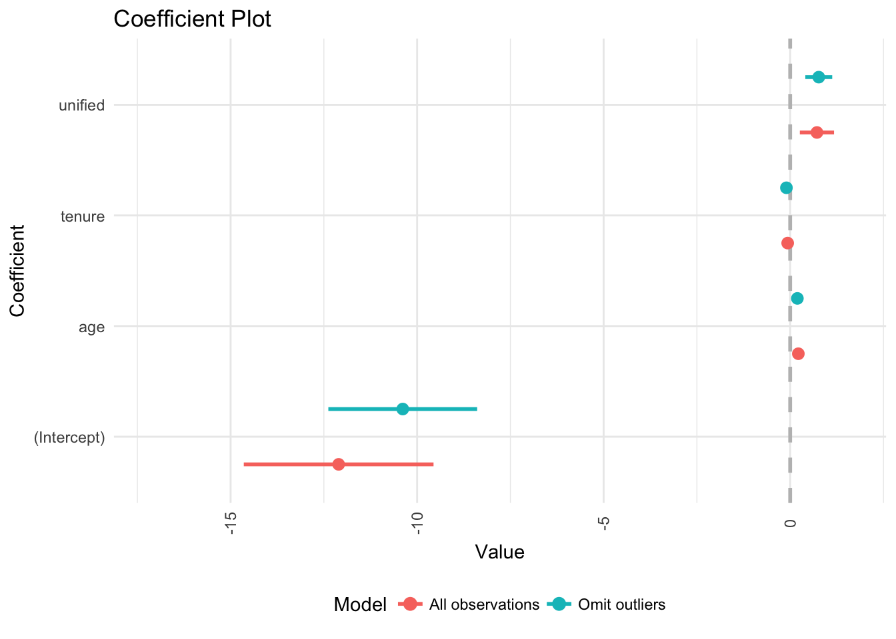
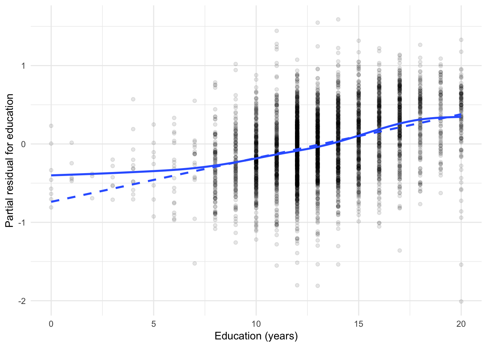
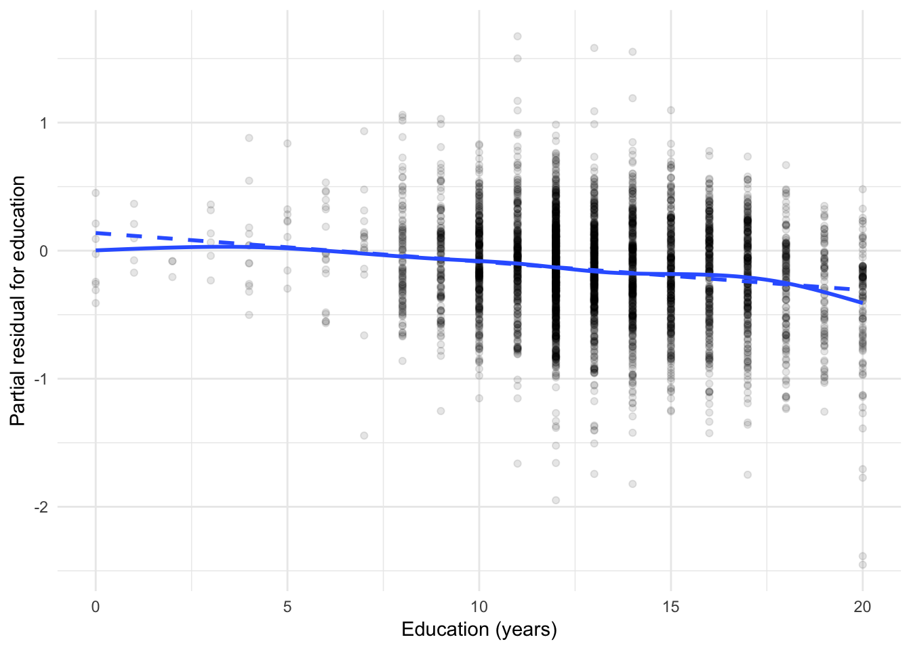

Diagnostic tests for OLS/GLM
MACS 30200 - Perspectives on Computational Research
Objectives
- Identify key assumptions of linear regression models
- Explain how to use residual plots for dianosing violations of regression assumptions
- Introduce methods for detecting and resolving unusual and influential data
- Introduce methods for detecting and resolving non-normally distributed errors
- Introduce methods for detecting and resolving non-constant variance of error terms
- Introduce methods for detecting and resolving non-linearity in the data
- Introduce methods for detecting and resolving collinearity
- Identify how to extend these methods to GLMs
library(tidyverse)
library(forcats)
library(broom)
library(modelr)
library(stringr)
library(ISLR)
library(titanic)
library(rcfss)
library(haven)
library(car)
options(digits = 3)
set.seed(1234)
theme_set(theme_minimal())Assumptions of linear regression models
Basic linear regression follows the functional form:
\[Y_i = \alpha + \beta x_i + \epsilon_i\]
where \(Y_i\) is the value of the response variable \(Y\) for the \(i\)th observation, \(x_i\) is the value for the explanatory variable \(X\) for the \(i\)th observation. The coefficients \(\alpha\) and \(\beta\) are population regression coefficients - our goal is to estimate these population parameters given the observed data. \(\epsilon_i\) is the error representing the aggregated omitted causes of \(Y\), other explanatory variables that could be included in the model, measurement error in \(Y\), and any inherently random component of \(Y\).
The key assumptions of linear regression concern the behavior of the errors.
Linearity
The expectation of the error1 is 0:
\[E(\epsilon_i) \equiv E(\epsilon | x_i) = 0\]
This allows us to recover the expected value of the response variable as a linear function of the explanatory variable:
\[\mu_i \equiv E(Y_i) \equiv E(Y | x_i) = E(\alpha + \beta x_i + \epsilon)\] \[\mu_i = \alpha + \beta x_i + E(\epsilon)\] \[\mu_i = \alpha + \beta x_i + 0\] \[\mu_i = \alpha + \beta x_i\]
Because \(\alpha\) and \(\beta\) are fixed parameters in the population, we can remove them from the expectation operator.
Constant variance
The variance of the errors is the same regardless of the values of \(X\):
\[V(\epsilon | x_i) = \sigma_{\epsilon}^2\]
Normality
The errors are assumped to be normally distributed:
\[\epsilon \sim N(0, \sigma_\epsilon^2)\]
Independence
Observations are sampled independently from one another. Any pair of errors \(\epsilon_i\) and \(\epsilon_j\) are independent for \(i \neq j\). Simple random sampling from a large population will ensure this assumption is met. However data collection procedures frequently (and explicitly) violate this assumption (e.g. time series data, panel survey data).
Fixed \(X\), or \(X\) measured without error and independent of the error
\(X\) is assumed to be fixed or measured without error and independent of the error. With a fixed \(X\), the researcher controls the precise value of \(X\) for a given observation (think experimental design with treatment/control). In observational study, we assume \(X\) is measured without error and that the explantory variable and the error are independent in the population from which the sample is drawn.
\[\epsilon_i \sim N(0, \sigma_\epsilon^2), \text{for } i = 1, \dots, n\]
\(X\) is not invariant
If \(X\) is fixed, it must vary (i.e. it’s values cannot all be the same). If \(X\) is random, then in the population \(X\) must vary. You cannot estimate a regression line for an invariant \(X\).
data_frame(x = 1,
y = rnorm(10)) %>%
ggplot(aes(x, y)) +
geom_point() +
geom_smooth(method = "lm") +
labs(title = "You cannot regress this",
subtitle = "Slope is undefined")
Handling violations of assumptions
If these assumptions are violated, conducting inference from linear regression becomes tricky, biased, inefficient, and/or error prone. You could move to a more robust inferential method such as nonparametric regression, decision trees, support vector machines, etc., but these methods are more tricky to generate inference about the explanatory variables. Instead, we can attempt to diagnose assumption violations and impose solutions while still constraining ourselves to a linear regression framework.
Unusual and influential data
Outliers are observations that are somehow unusual, either in their value of \(Y_i\), of one or more \(X_i\)s, or some combination thereof. Outliers have the potential to have a disproportionate influence on a regression model.
Terms
- Outlier - an observation that has an unusual value on the dependent variable \(Y\) given its particular combination of values on \(X\)
- Leverage - degree of potential influence on the coefficient estimates that a given observation can (but not necessarily does) have
- Discrepancy - extent to which an observation is “unusual” or “different” from the rest of the data
Influence - how much effect a particular observation’s value(s) on \(Y\) and \(X\) have on the coefficient estimates. Influence is a function of leverage and discrepancy:
\[\text{Influence} = \text{Leverage} \times \text{Discrepancy}\]
flintstones <- tribble(
~name, ~x, ~y,
"Barney", 13, 75,
"Dino", 24, 300,
"Betty", 14, 250,
"Fred", 10, 220,
"Wilma", 8, 210
)
ggplot(flintstones, aes(x, y, label = name)) +
geom_smooth(data = filter(flintstones, name %in% c("Wilma", "Fred", "Betty")),
method = "lm", se = FALSE, fullrange = TRUE, color = "gray",
aes(linetype = "Betty + Fred + Wilma")) +
geom_smooth(data = filter(flintstones, name != "Dino"),
method = "lm", se = FALSE, fullrange = TRUE, color = "gray",
aes(linetype = "Barney + Betty + Fred + Wilma")) +
geom_smooth(data = filter(flintstones, name != "Barney"),
method = "lm", se = FALSE, fullrange = TRUE, color = "gray",
aes(linetype = "Betty + Dino + Fred + Wilma")) +
scale_linetype_manual(values = c(3,2,1),
guide = guide_legend(nrow = 3,
reverse = TRUE)) +
geom_point(size = 2) +
ggrepel::geom_label_repel() +
labs(linetype = NULL) +
theme(legend.position = "bottom")
- Dino is an observation with high leverage but low discrepancy (close to the regression line defined by Betty, Fred, and Wilma). Therefore he has little impact on the regression line (long dashed line); his influence is low because his discrepancy is low.
- Barney has high leverage (though lower than Dino) and high discrepancy, so he substantially influences the regression results (short-dashed line).
Measuring leverage
Leverage is typically assessed using the leverage (hat) statistic:
\[h_i = \frac{1}{n} + \frac{(X_i - \bar{X})^2}{\sum_{i'=1}^{n} (X_{i'} - \bar{X})^2}\]
Generalized to the multivariate case:
\[h_i = \mathbf{X}_i (\mathbf{X'X})^{-1} \mathbf{X'}_i\]
- It is solely a function of \(X\)
- Larger values indicate higher leverage
- \(\frac{1}{n} \leq h_i \leq 1\)
- \(\bar{h} = \frac{(p + 1)}{n}\)
Observations with a leverage statistic greater than the average could have high leverage.
Measuring discrepancy
Residuals are a natural way to look for discrepant or outlying observations (discrepant obserations typically have large residuals, or differences between actual and fitted values for \(y_i\).) The problem is that variability of the errors \(E_i\) do not have equal variances, even if the actual errors \(\epsilon_i\) do have equal variances:
\[V(E_i) = \sigma_\epsilon^2 (1 - h_i)\]
High leverage observations tend to have small residuals, which makes sense because they pull the regression line towards them. Alternatively we can calculate a standardized residual which parses out the variability in \(X_i\) for \(E_i\):
\[E'_i \equiv \frac{E_i}{S_{E} \sqrt{1 - h_i}}\]
where \(S_E\) is the standard error of the regression:
\[S_E = \sqrt{\frac{E_i^2}{(n - k - 1)}}\]
The problem is that the numerator and the denominator are not independent - they both contain \(E_i\), so \(E'_i\) does not follow a \(t\)-distribution. Instead, we can modify this measure by calculating \(S_{E(-i)}\); that is, refit the model deleting each \(i\)th observation, estimating the standard error of the regression \(S_{E(-i)}\) based on the remaining \(i-1\) observations. We then calculate the studentized residual:
\[E_i^{\ast} \equiv \frac{E_i}{S_{E(-i)} \sqrt{1 - h_i}}\]
which now has an independent numerator and denominator and follows a \(t\)-distribution with \(n-k-2\) degrees of freedom. They are on a common scale and we should expect roughly 95% of the studentized residuals to fall within the interval \([-2,2]\).
Measuring influence
As described previously, influence is the a combination of an observation’s leverage and discrepancy. In other words, influence is the effect of a particular observation on the coefficient estimates. A simple measure of that influence is the difference between the coefficient estimate with and without the observation in question:
\[D_{ij} = \hat{\beta_j} - \hat{\beta}_{j(-i)}, \text{for } i=1, \dots, n \text{ and } j = 0, \dots, k\]
This measure is called \(\text{DFBETA}_{ij}\). Since coefficient estimates are scaled differently depending on how the variables are scaled, we can rescale \(\text{DFBETA}_{ij}\) by the coefficient’s standard error to account for this fact:
\[D^{\ast}_{ij} = \frac{D_{ij}}{SE_{-i}(\beta_j)}\]
This measure is called \(\text{DFBETAS}_{ij}\).
- Positive values of \(\text{DFBETAS}_{ij}\) correspond to observations which decrease the estimate of \(\hat{\beta}_j\)
- Negative values of \(\text{DFBETAS}_{ij}\) correspond to observations which increase the estimate of \(\hat{\beta}_j\)
Frequently \(\text{DFBETA}\)s are used to construct summary statistics of each observation’s influence on the regression model. Cook’s D is based on the theory that one could conduct an \(F\)-test on each observation for the hypothesis that \(\beta_j = \hat{\beta}_{k(-i)} \forall j \in J\). The formula for this measure is:
\[D_i = \frac{E^{'2}_i}{k + 1} \times \frac{h_i}{1 - h_i}\]
where \(\tilde{u}_i^2\) is the squared standardized residual, \(k\) is the number of parameters in the model, and \(\frac{h_i}{1 - h_i}\) is the hat value. We look for values of \(D_i\) that stand out from the rest.
Visualizing leverage, discrepancy, and influence
For example, here are the results of a basic model of the number of federal laws struck down by the U.S. Supreme Court in each Congress, based on:
- Age - the mean age of the members of the Supreme Court
- Tenure - mean tenure of the members of the Court
- Unified - a dummy variable indicating whether or not the Congress was controlled by the same party in that period
# read in data and estimate model
dahl <- read_dta("data/LittleDahl.dta")
dahl_mod <- lm(nulls ~ age + tenure + unified, data = dahl)
tidy(dahl_mod)## term estimate std.error statistic p.value
## 1 (Intercept) -12.1034 2.5432 -4.76 6.57e-06
## 2 age 0.2189 0.0448 4.88 4.01e-06
## 3 tenure -0.0669 0.0643 -1.04 3.00e-01
## 4 unified 0.7176 0.4584 1.57 1.21e-01A major concern with regression analysis of this data is that the results are being driven by outliers in the data.
dahl <- dahl %>%
mutate(year = congress * 2 + 1787)
ggplot(dahl, aes(year, nulls)) +
geom_line() +
geom_vline(xintercept = 1935, linetype = 2) +
labs(x = "Year",
y = "Congressional laws struck down")
ggplot(dahl, aes(year, age)) +
geom_line() +
geom_vline(xintercept = 1935, linetype = 2) +
labs(x = "Year",
y = "Mean age of justices on the Court")
During the 74th Congress (1935-36), the New Deal/Court-packing crisis was associated with an abnormally large number of laws struck down by the court. We should determine whether or not this observation is driving our results.
By combining all three variables into a “bubble plot”, we can visualize all three variables simultaneously.
- Each observation’s leverage (\(h_i\)) is plotted on the \(x\) axis
- Each observation’s discrepancy (i.e. Studentized residual) is plotted on the \(y\) axis
- Each symbol is drawn proportional to the observation’s Cook’s \(D_i\)
# add key statistics
dahl_augment <- dahl %>%
mutate(hat = hatvalues(dahl_mod),
student = rstudent(dahl_mod),
cooksd = cooks.distance(dahl_mod))
# draw bubble plot
ggplot(dahl_augment, aes(hat, student)) +
geom_hline(yintercept = 0, linetype = 2) +
geom_point(aes(size = cooksd), shape = 1) +
geom_text(data = dahl_augment %>%
arrange(-cooksd) %>%
slice(1:10),
aes(label = Congress)) +
scale_size_continuous(range = c(1, 20)) +
labs(x = "Leverage",
y = "Studentized residual") +
theme(legend.position = "none")
The bubble plot tells us several things:
- The size/color of the symbols is proportional to Cook’s D, which is in turn a multiplicative function of the square of the Studentized residuals (Y axis) and the leverage (X axis), so observations farther away from \(Y=0\) and/or have higher values of \(X\) will have larger symbols.
- The plot tells us whether the large influence of an observation is due to high discrepancy, high leverage, or both
- The 104th Congress has relatively low leverage but is very discrepant
- The 74th and 98th Congresses demonstrate both high discrepancy and high leverage
Numerical rules of thumb
These are not hard and fast rules rigorously defended by mathematical proofs; they are simply potential rules of thumb to follow when interpreting the above statistics.
Hat-values
Anything exceeding twice the average \(\bar{h} = \frac{k + 1}{n}\) is noteworthy. In our example that would be the following observations:
dahl_augment %>%
filter(hat > 2 * mean(hat))## # A tibble: 9 × 10
## Congress congress nulls age tenure unified year hat student
## <chr> <dbl> <dbl> <dbl> <dbl> <dbl> <dbl> <dbl> <dbl>
## 1 1st 1 0 49.8 0.8 1 1789 0.0974 0.330
## 2 3rd 3 0 52.8 4.2 0 1793 0.1132 0.511
## 3 12th 12 0 49.0 6.6 1 1811 0.0802 0.669
## 4 17th 17 0 59.0 16.6 1 1821 0.0887 -0.253
## 5 20th 20 0 61.7 17.4 1 1827 0.0790 -0.577
## 6 23rd 23 0 64.0 18.4 1 1833 0.0819 -0.844
## 7 34th 34 0 64.0 14.6 0 1855 0.0782 -0.561
## 8 36th 36 0 68.7 17.8 0 1859 0.1020 -1.072
## 9 99th 99 3 71.9 16.7 0 1985 0.0912 0.295
## # ... with 1 more variables: cooksd <dbl>Studentized residuals
Anything outside of the range \([-2,2]\) is discrepant.
dahl_augment %>%
filter(abs(student) > 2)## # A tibble: 7 × 10
## Congress congress nulls age tenure unified year hat student cooksd
## <chr> <dbl> <dbl> <dbl> <dbl> <dbl> <dbl> <dbl> <dbl> <dbl>
## 1 67th 67 6 66.0 9.0 1 1921 0.0361 2.14 0.0415
## 2 74th 74 10 71.1 14.2 1 1935 0.0514 4.42 0.2229
## 3 90th 90 6 64.7 13.3 1 1967 0.0195 2.49 0.0292
## 4 91st 91 6 65.1 13.0 1 1969 0.0189 2.42 0.0269
## 5 92nd 92 5 62.0 9.2 1 1971 0.0146 2.05 0.0150
## 6 98th 98 7 69.9 14.7 0 1983 0.0730 3.02 0.1655
## 7 104th 104 8 60.6 12.5 1 1995 0.0208 4.48 0.0897Influence
\[D_i > \frac{4}{n - k - 1}\]
where \(n\) is the number of observations and \(k\) is the number of coefficients in the regression model.
dahl_augment %>%
filter(cooksd > 4 / (nrow(.) - (length(coef(dahl_mod)) - 1) - 1))## # A tibble: 4 × 10
## Congress congress nulls age tenure unified year hat student cooksd
## <chr> <dbl> <dbl> <dbl> <dbl> <dbl> <dbl> <dbl> <dbl> <dbl>
## 1 67th 67 6 66.0 9.0 1 1921 0.0361 2.14 0.0415
## 2 74th 74 10 71.1 14.2 1 1935 0.0514 4.42 0.2229
## 3 98th 98 7 69.9 14.7 0 1983 0.0730 3.02 0.1655
## 4 104th 104 8 60.6 12.5 1 1995 0.0208 4.48 0.0897How to treat unusual observations
Mistakes
If the data is just wrong (miscoded, mismeasured, misentered, etc.), then either fix the error, impute a plausible value for the observation, or omit the offending observation.
Weird observations
If the data for a particular observation is just strange, then you may want to ask “why is it so strange?”
- The data are strange because something unusual/weird/singular happened to that data point
- If that “something” is important to the theory being tested, then you may want to respecify your model
- If the answer is no, then you can drop the offending observation from the analysis
- The data are strange for apparent reason
- Not really a good answer here. Try digging into the history of the observation to find out what is going on.
- Dropping the observation is a judgment call
- You could always rerun the model omitting the observation and including the results as a footnote (i.e. a robustness check)
For example, let’s reestimate the SCOTUS model and omit observations that were commonly identified as outliers:2
dahl_omit <- dahl %>%
filter(!(congress %in% c(74, 98, 104)))
dahl_omit_mod <- lm(nulls ~ age + tenure + unified, data = dahl_omit)
coefplot::multiplot(dahl_mod, dahl_omit_mod,
names = c("All observations",
"Omit outliers")) +
theme(legend.position = "bottom")
# rsquared values
rsquare(dahl_mod, dahl)## [1] 0.232rsquare(dahl_omit_mod, dahl_omit)## [1] 0.258# rmse values
rmse(dahl_mod, dahl)## [1] 1.68rmse(dahl_omit_mod, dahl_omit)## [1] 1.29- Not much has changed from the original model
- Estimate for age is a bit smaller, as well as a smaller standard error
- Tenure is also smaller, but only fractionally
- Unified is a bit larger and with a smaller standard error
- \(R^2\) is larger for the omitted observation model, and the RMSE is smaller
- These three observations mostly influenced the precision of the estimates (i.e. standard errors), not the accuracy of them
Non-normally distributed errors
Recall that OLS assumes errors are distributed normally:
\[\epsilon \sim N(0, \sigma_\epsilon^2)\]
However according to the central limit theorem, inference based on the least-squares estimator is approximately valid under broad conditions.3 So while the validity of the estimates is robust to violating this assumption, the efficiency of the estimates is not robust. Recall that efficiency guarantees us the smallest possible sampling variance and therefore the smallest possible mean squared error (MSE). Heavy-tailed or skewed distributions of the errors will therefore give rise to outliers (which we just recognized as a problem). Alternatively, we interpret the least-squares fit as a conditional mean \(Y | X\). But arithmetic means are not good measures of the center of a highly skewed distribution.
Detecting non-normally distributed errors
Graphical interpretations are easiest to detect non-normality in the errors. Consider a regression model using survey data from the 1994 wave of Statistics Canada’s Survey of Labour and Income Dynamics (SLID), explaining hourly wages as an outcome of sex, education, and age:
(slid <- read_tsv("http://socserv.socsci.mcmaster.ca/jfox/Books/Applied-Regression-3E/datasets/SLID-Ontario.txt"))## # A tibble: 3,997 × 4
## age sex compositeHourlyWages yearsEducation
## <int> <chr> <dbl> <int>
## 1 40 Male 10.56 15
## 2 19 Male 11.00 13
## 3 46 Male 17.76 14
## 4 50 Female 14.00 16
## 5 31 Male 8.20 15
## 6 30 Female 16.97 13
## 7 61 Female 6.70 12
## 8 46 Female 14.00 14
## 9 43 Male 19.20 18
## 10 17 Male 7.25 11
## # ... with 3,987 more rowsslid_mod <- lm(compositeHourlyWages ~ sex + yearsEducation + age, data = slid)
tidy(slid_mod)## term estimate std.error statistic p.value
## 1 (Intercept) -8.124 0.59898 -13.6 5.27e-41
## 2 sexMale 3.474 0.20701 16.8 4.04e-61
## 3 yearsEducation 0.930 0.03426 27.1 5.47e-149
## 4 age 0.261 0.00866 30.2 3.42e-180car::qqPlot(slid_mod)
The above figure is a quantile-comparison plot, graphing for each observation its studentized residual on the \(y\) axis and the corresponding quantile in the \(t\)-distribution on the \(x\) axis. The dashed lines indicate 95% confidence intervals calculated under the assumption that the errors are normally distributed. If any observations fall outside this range, this is an indication that the assumption has been violated. Clearly, here that is the case.
augment(slid_mod, slid) %>%
mutate(.student = rstudent(slid_mod)) %>%
ggplot(aes(.student)) +
geom_density(adjust = .5) +
labs(x = "Studentized residuals",
y = "Estimated density")
From the density plot of the studentized residuals, we can also see that the residuals are positively skewed.
Fixing non-normally distributed errors
Power and log transformations are typically used to correct this problem. Here, trial and error reveals that by log transforming the wage variable, the distribution of the residuals becomes much more symmetric:
slid <- slid %>%
mutate(wage_log = log(compositeHourlyWages))
slid_log_mod <- lm(wage_log ~ sex + yearsEducation + age, data = slid)
tidy(slid_log_mod)## term estimate std.error statistic p.value
## 1 (Intercept) 1.0990 0.037965 28.9 1.97e-167
## 2 sexMale 0.2245 0.013121 17.1 2.16e-63
## 3 yearsEducation 0.0559 0.002171 25.7 2.95e-135
## 4 age 0.0182 0.000549 33.1 4.50e-212car::qqPlot(slid_log_mod)
augment(slid_log_mod, slid) %>%
mutate(.student = rstudent(slid_log_mod)) %>%
ggplot(aes(.student)) +
geom_density(adjust = .5) +
labs(x = "Studentized residuals",
y = "Estimated density")
Non-constant error variance
Non-linearity in the data
By assuming the average error \(E(\epsilon)\) is 0 everywhere implies that the regression line (surface) accurately reflects the relationship between \(X\) and \(Y\). Violating this assumption means that the model fails to capture the systematic relationship between the response and explanatory variables. Therefore here, the term nonlinearity could mean a couple different things:
- The relationship between \(X_1\) and \(Y\) is nonlinear - that is, it is not constant and monotonic
- The relationship between \(X_1\) and \(Y\) is conditional on \(X_2\) - that is, the relationship is interactive rather than purely additive
Detecting nonlinearity can be tricky in higher-dimensional regression models with multiple explanatory variables.
Partial residual plots
Define the partial residual for the \(j\)th explanatory variable:
\[E_i^{(j)} = E_i + B_j X_{ij}\]
In essence, calculate the least-squares residual (\(E_i\)) and add to it the linear component of the partial relationship between \(Y\) and \(X_j\). Finally, we can plot \(X_j\) versus \(E^{(j)}\) and assess the relationship. For instance, consider the results of the logged wage model from earlier:
# get partial resids
slid_resid <- residuals(slid_log_mod, type = "partial") %>%
as_tibble
names(slid_resid) <- str_c(names(slid_resid), "_resid")
slid_diag <- augment(slid_log_mod, slid) %>%
bind_cols(slid_resid)
ggplot(slid_diag, aes(age, age_resid)) +
geom_point(alpha = .1) +
geom_smooth(se = FALSE) +
geom_smooth(method = "lm", se = FALSE, linetype = 2) +
labs(x = "Age",
y = "Partial residual for age")
ggplot(slid_diag, aes(yearsEducation, yearsEducation_resid)) +
geom_point(alpha = .1) +
geom_smooth(se = FALSE) +
geom_smooth(method = "lm", se = FALSE, linetype = 2) +
labs(x = "Education (years)",
y = "Partial residual for education")
The solid lines are GAMs, while the dashed lines are linear least-squares fits. For age, the partial relationship with logged wages is not linear - some transformation of age is necessary to correct this. For education, the relationship is more approximately linear except for the discrepancy for individual with very low education levels.
We can correct this by adding a squared polynomial term for age, and square the education term. The resulting regression model is:
\[\log(\text{Wage}) = \beta_0 + \beta_1(\text{Male}) + \beta_2 \text{Age} + \beta_3 \text{Age}^2 + \beta_4 \text{Education}^2\]
slid_log_trans <- lm(wage_log ~ sex + I(yearsEducation^2) + age + I(age^2), data = slid)
tidy(slid_log_trans)## term estimate std.error statistic p.value
## 1 (Intercept) 0.396819 5.78e-02 6.87 7.62e-12
## 2 sexMale 0.221458 1.24e-02 17.79 3.21e-68
## 3 I(yearsEducation^2) 0.001805 7.86e-05 22.96 1.19e-109
## 4 age 0.083018 3.19e-03 26.05 2.93e-138
## 5 I(age^2) -0.000852 4.10e-05 -20.78 3.85e-91Because the model is now nonlinear in both age and education, we need to rethink how to draw the partial residuals plot. The easiest approach is to plot the partial residuals for both age and education against the original explanatory variable. For age, that is
\[E_i^{\text{Age}} = 0.083 \times \text{Age}_i -0.0008524 \times \text{Age}^2_i + E_i\]
and for education,
\[E_i^{\text{Education}} = 0.002 \times \text{Education}^2_i + E_i\]
# get partial resids
slid_trans_resid <- residuals(slid_log_trans, type = "partial") %>%
as_tibble
names(slid_trans_resid) <- c("sex", "education", "age", "age_sq")
names(slid_trans_resid) <- str_c(names(slid_trans_resid), "_resid")
slid_trans_diag <- augment(slid_log_trans, slid) %>%
as_tibble %>%
mutate(age_resid = coef(slid_log_trans)[[4]] * age +
coef(slid_log_trans)[[5]] * age^2 + .resid,
educ_resid = coef(slid_log_trans)[[5]] * yearsEducation^2 + .resid)
ggplot(slid_trans_diag, aes(age, age_resid)) +
geom_point(alpha = .1) +
geom_smooth(se = FALSE) +
geom_smooth(method = "lm", se = FALSE, linetype = 2) +
labs(x = "Age",
y = "Partial residual for age")
ggplot(slid_trans_diag, aes(yearsEducation, educ_resid)) +
geom_point(alpha = .1) +
geom_smooth(se = FALSE) +
geom_smooth(method = "lm", se = FALSE, linetype = 2) +
labs(x = "Education (years)",
y = "Partial residual for education")
Collinearity
Collinearity (or multicollinearity) is a state of a model where explanatory variables are correlated with one another.
Perfect collinearity
Perfect collinearity is incredibly rare, and typically involves using transformed versions of a variable in the model along with the original variable. For example, let’s estimate a regression model explaining mpg as a function of displ, wt, and cyl:
mtcars1 <- lm(mpg ~ disp + wt + cyl, data = mtcars)
summary(mtcars1)##
## Call:
## lm(formula = mpg ~ disp + wt + cyl, data = mtcars)
##
## Residuals:
## Min 1Q Median 3Q Max
## -4.403 -1.403 -0.495 1.339 6.072
##
## Coefficients:
## Estimate Std. Error t value Pr(>|t|)
## (Intercept) 41.10768 2.84243 14.46 1.6e-14 ***
## disp 0.00747 0.01184 0.63 0.5332
## wt -3.63568 1.04014 -3.50 0.0016 **
## cyl -1.78494 0.60711 -2.94 0.0065 **
## ---
## Signif. codes: 0 '***' 0.001 '**' 0.01 '*' 0.05 '.' 0.1 ' ' 1
##
## Residual standard error: 2.59 on 28 degrees of freedom
## Multiple R-squared: 0.833, Adjusted R-squared: 0.815
## F-statistic: 46.4 on 3 and 28 DF, p-value: 5.4e-11Now let’s say we want to recode displ so it is centered around it’s mean and reestimate the model:
mtcars <- mtcars %>%
mutate(disp_mean = disp - mean(disp))
mtcars2 <- lm(mpg ~ disp + wt + cyl + disp_mean, data = mtcars)
summary(mtcars2)##
## Call:
## lm(formula = mpg ~ disp + wt + cyl + disp_mean, data = mtcars)
##
## Residuals:
## Min 1Q Median 3Q Max
## -4.403 -1.403 -0.495 1.339 6.072
##
## Coefficients: (1 not defined because of singularities)
## Estimate Std. Error t value Pr(>|t|)
## (Intercept) 41.10768 2.84243 14.46 1.6e-14 ***
## disp 0.00747 0.01184 0.63 0.5332
## wt -3.63568 1.04014 -3.50 0.0016 **
## cyl -1.78494 0.60711 -2.94 0.0065 **
## disp_mean NA NA NA NA
## ---
## Signif. codes: 0 '***' 0.001 '**' 0.01 '*' 0.05 '.' 0.1 ' ' 1
##
## Residual standard error: 2.59 on 28 degrees of freedom
## Multiple R-squared: 0.833, Adjusted R-squared: 0.815
## F-statistic: 46.4 on 3 and 28 DF, p-value: 5.4e-11Ooops. What’s the problem? disp and disp_mean are perfectly correlated with each other:
ggplot(mtcars, aes(disp, disp_mean)) +
geom_point()
Because they perfectly explain each other, we cannot estimate a linear regression model that contains both variables.4 Fortunately R automatically drops the second variable so it can estimate the model. Because of this, perfect multicollinearity is rarely problematic in social science.
Less-than-perfect collinearity
Instead consider the credit dataset:
credit <- read_csv("data/Credit.csv") %>%
select(-X1)
names(credit) <- tolower(names(credit))
ggplot(credit, aes(limit, age)) +
geom_point()
Age and limit are not strongly correlated with one another, so estimating a linear regression model to predict an individual’s balance as a function of age and limit is not a problem:
age_limit <- lm(balance ~ age + limit, data = credit)
tidy(age_limit)## term estimate std.error statistic p.value
## 1 (Intercept) -173.411 43.82839 -3.96 9.01e-05
## 2 age -2.291 0.67248 -3.41 7.23e-04
## 3 limit 0.173 0.00503 34.50 1.63e-121But what about using an individuals credit card rating instead of age? It is likely a good predictor of balance as well:
ggplot(credit, aes(rating, balance)) +
geom_point() +
geom_smooth()
limit_rate <- lm(balance ~ limit + rating, data = credit)
tidy(limit_rate)## term estimate std.error statistic p.value
## 1 (Intercept) -377.5368 45.2542 -8.343 1.21e-15
## 2 limit 0.0245 0.0638 0.384 7.01e-01
## 3 rating 2.2017 0.9523 2.312 2.13e-02coefplot::multiplot(age_limit, limit_rate)
By replacing age with rating, we developed a problem in our model. The problem is that limit and rating are strongly correlated with one another:
ggplot(credit, aes(limit, rating)) +
geom_point() +
geom_smooth()
coefplot::multiplot(age_limit, limit_rate, predictors = "limit")
In the regression model, it is difficult to parse out the independent effects of limit and rating on balance, because limit and rating tend to increase and decrease in association with one another. Because the accuracy of our estimates of the parameters is reduced, the standard errors increase. This is why you can see above that the standard error for limit is much larger in the second model compared to the first model.
Detecting collinearity
Scatterplot matrix
A correlation or scatterplot matrix would help to reveal any strongly correlated variables:
cormat_heatmap <- function(data){
# generate correlation matrix
cormat <- round(cor(data), 2)
# melt into a tidy table
get_upper_tri <- function(cormat){
cormat[lower.tri(cormat)]<- NA
return(cormat)
}
upper_tri <- get_upper_tri(cormat)
# reorder matrix based on coefficient value
reorder_cormat <- function(cormat){
# Use correlation between variables as distance
dd <- as.dist((1-cormat)/2)
hc <- hclust(dd)
cormat <-cormat[hc$order, hc$order]
}
cormat <- reorder_cormat(cormat)
upper_tri <- get_upper_tri(cormat)
# Melt the correlation matrix
melted_cormat <- reshape2::melt(upper_tri, na.rm = TRUE)
# Create a ggheatmap
ggheatmap <- ggplot(melted_cormat, aes(Var2, Var1, fill = value))+
geom_tile(color = "white")+
scale_fill_gradient2(low = "blue", high = "red", mid = "white",
midpoint = 0, limit = c(-1,1), space = "Lab",
name="Pearson\nCorrelation") +
theme_minimal()+ # minimal theme
theme(axis.text.x = element_text(angle = 45, vjust = 1,
size = 12, hjust = 1))+
coord_fixed()
# add correlation values to graph
ggheatmap +
geom_text(aes(Var2, Var1, label = value), color = "black", size = 4) +
theme(
axis.title.x = element_blank(),
axis.title.y = element_blank(),
panel.grid.major = element_blank(),
panel.border = element_blank(),
panel.background = element_blank(),
axis.ticks = element_blank(),
legend.position = "bottom")
}
cormat_heatmap(select_if(credit, is.numeric))
library(GGally)
ggpairs(select_if(credit, is.numeric))
Here it is very clear that limit and rating are strongly correlated with one another.
Variance inflation factor (VIF)
Unfortunately correlation matricies may not be sufficient to detect collinearity if the correlation exists between three or more variables (aka multicollinearity) while not existing between any two pairs of these variables. Instead, we can calculate the variance inflation factor (VIF) which is the ratio of the variance of \(\hat{\beta}_j\) when fitting the full model divided by the variance of \(\hat{\beta}_j\) if fit on its own model. We can use the car::vif() function in R to calculate this statistic for each coefficient. A good rule of thumb is that a VIF statistic greater than 10 indicates potential multicollinearity in the model. Applied to the credit regression models above:
vif(age_limit)## age limit
## 1.01 1.01vif(limit_rate)## limit rating
## 160 160Fixing multicollinearity
What not to do
Drop one or more of the collinear variables from the model
This is not a good idea, even if it makes your results “significant”. By omitting the variable, you are completely respecifying your model in direct contradiction to your theory. If your theory suggests that a variable can be dropped, go ahead. But if not, then don’t do it.
What you could do instead
Add data
The more observations, the better. It could at least decrease your standard errors and give you more precise estimates. And if you add “odd” or unusual observations, it could also reduce the degree of multicollinearity.
Transform the covariates
If the variables are indicators of the same underlying concept, you can combine them into an index variable. This could be an additive index where you sum up comparable covariates or binary indicators. Alternatively, you could create an index via principal components analysis.
Shrinkage methods
See chapter 6 in ISLR.
Applying to GLMs
Session Info
devtools::session_info()## setting value
## version R version 3.3.3 (2017-03-06)
## system x86_64, darwin13.4.0
## ui X11
## language (EN)
## collate en_US.UTF-8
## tz America/Chicago
## date 2017-05-02
##
## package * version date source
## assertthat 0.2.0 2017-04-11 cran (@0.2.0)
## backports 1.0.5 2017-01-18 CRAN (R 3.3.2)
## broom * 0.4.2 2017-02-13 CRAN (R 3.3.2)
## car * 2.1-4 2016-12-02 CRAN (R 3.3.2)
## codetools 0.2-15 2016-10-05 CRAN (R 3.3.3)
## colorspace 1.3-2 2016-12-14 CRAN (R 3.3.2)
## DBI 0.6 2017-03-09 CRAN (R 3.3.3)
## devtools 1.12.0 2016-06-24 CRAN (R 3.3.0)
## digest 0.6.12 2017-01-27 CRAN (R 3.3.2)
## dplyr * 0.5.0 2016-06-24 CRAN (R 3.3.0)
## evaluate 0.10 2016-10-11 CRAN (R 3.3.0)
## forcats * 0.2.0 2017-01-23 CRAN (R 3.3.2)
## foreign 0.8-67 2016-09-13 CRAN (R 3.3.3)
## GGally * 1.3.0 2016-11-13 CRAN (R 3.3.2)
## ggplot2 * 2.2.1.9000 2017-05-01 Github (hadley/ggplot2@f4398b6)
## gtable 0.2.0 2016-02-26 CRAN (R 3.3.0)
## haven * 1.0.0 2016-09-23 cran (@1.0.0)
## hms 0.3 2016-11-22 CRAN (R 3.3.2)
## htmltools 0.3.6 2017-04-28 cran (@0.3.6)
## httr 1.2.1 2016-07-03 CRAN (R 3.3.0)
## ISLR * 1.0 2013-06-11 CRAN (R 3.3.0)
## jsonlite 1.4 2017-04-08 cran (@1.4)
## knitr 1.15.1 2016-11-22 cran (@1.15.1)
## lattice 0.20-34 2016-09-06 CRAN (R 3.3.3)
## lazyeval 0.2.0 2016-06-12 CRAN (R 3.3.0)
## lme4 1.1-12 2016-04-16 cran (@1.1-12)
## lubridate 1.6.0 2016-09-13 CRAN (R 3.3.0)
## magrittr 1.5 2014-11-22 CRAN (R 3.3.0)
## MASS 7.3-45 2016-04-21 CRAN (R 3.3.0)
## Matrix 1.2-8 2017-01-20 CRAN (R 3.3.3)
## MatrixModels 0.4-1 2015-08-22 CRAN (R 3.3.0)
## memoise 1.0.0 2016-01-29 CRAN (R 3.3.0)
## mgcv 1.8-17 2017-02-08 CRAN (R 3.3.3)
## minqa 1.2.4 2014-10-09 cran (@1.2.4)
## mnormt 1.5-5 2016-10-15 CRAN (R 3.3.0)
## modelr * 0.1.0 2016-08-31 CRAN (R 3.3.0)
## munsell 0.4.3 2016-02-13 CRAN (R 3.3.0)
## nlme 3.1-131 2017-02-06 CRAN (R 3.3.3)
## nloptr 1.0.4 2014-08-04 cran (@1.0.4)
## nnet 7.3-12 2016-02-02 CRAN (R 3.3.3)
## pbkrtest 0.4-6 2016-01-27 CRAN (R 3.3.0)
## plyr 1.8.4 2016-06-08 CRAN (R 3.3.0)
## psych 1.7.3.21 2017-03-22 CRAN (R 3.3.2)
## purrr * 0.2.2 2016-06-18 CRAN (R 3.3.0)
## quantreg 5.29 2016-09-04 CRAN (R 3.3.0)
## R6 2.2.0 2016-10-05 CRAN (R 3.3.0)
## rcfss * 0.1.4 2017-02-28 local
## RColorBrewer 1.1-2 2014-12-07 CRAN (R 3.3.0)
## Rcpp 0.12.10 2017-03-19 cran (@0.12.10)
## readr * 1.1.0 2017-03-22 cran (@1.1.0)
## readxl 0.1.1 2016-03-28 CRAN (R 3.3.0)
## reshape 0.8.6 2016-10-21 CRAN (R 3.3.0)
## reshape2 1.4.2 2016-10-22 CRAN (R 3.3.0)
## rlang 0.0.0.9018 2017-05-01 Github (hadley/rlang@460323e)
## rmarkdown 1.3 2016-12-21 CRAN (R 3.3.2)
## rprojroot 1.2 2017-01-16 CRAN (R 3.3.2)
## rvest 0.3.2 2016-06-17 CRAN (R 3.3.0)
## scales 0.4.1 2016-11-09 CRAN (R 3.3.1)
## SparseM 1.74 2016-11-10 CRAN (R 3.3.2)
## stringi 1.1.2 2016-10-01 CRAN (R 3.3.0)
## stringr * 1.2.0 2017-02-18 CRAN (R 3.3.2)
## tibble * 1.3.0.9001 2017-05-01 Github (tidyverse/tibble@08af6b0)
## tidyr * 0.6.1 2017-01-10 CRAN (R 3.3.2)
## tidyverse * 1.1.1 2017-01-27 CRAN (R 3.3.2)
## titanic * 0.1.0 2015-08-31 CRAN (R 3.3.0)
## withr 1.0.2 2016-06-20 CRAN (R 3.3.0)
## xml2 1.1.1 2017-01-24 CRAN (R 3.3.2)
## yaml 2.1.14 2016-11-12 cran (@2.1.14)The average value of \(\epsilon\) given \(XS\)↩
74th (1935-36), 98th (1983-84), and 104th (1995-96).↩
Assuming the sample size is sufficiently large.↩
Basically we cannot invert the variance-covariance matrix of \(\mathbf{X}\) because the collinear columns in \(\mathbf{X}\) are perfectly linearly dependent on each other. Because of this, we cannot get parameter estimates or standard errors for the model.↩
This work is licensed under the CC BY-NC 4.0 Creative Commons License.